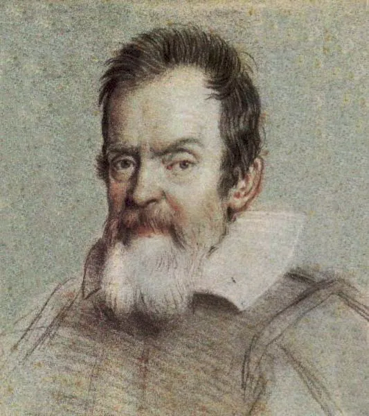
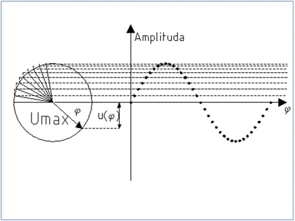
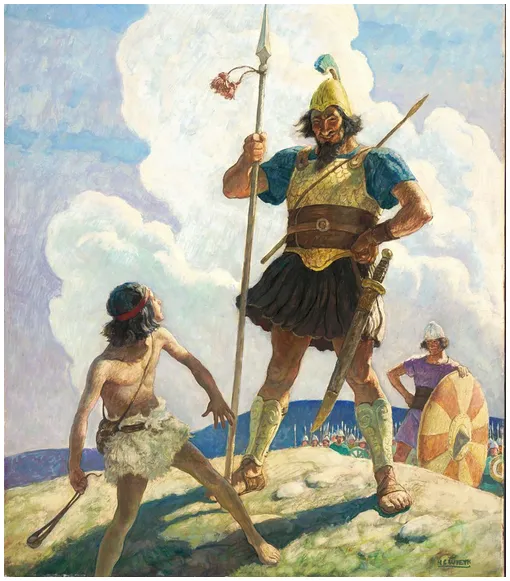
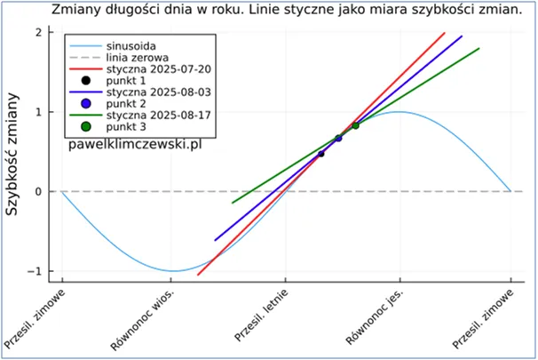
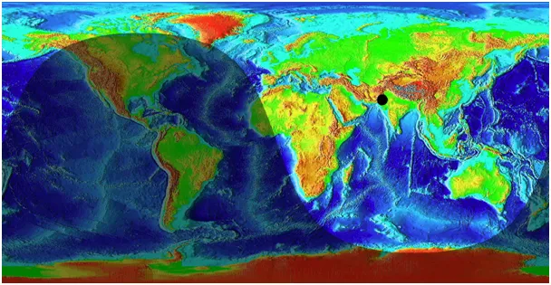
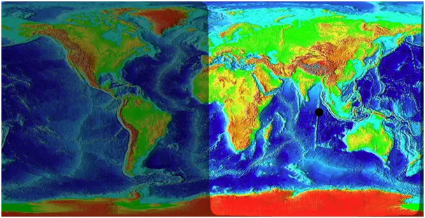

Zmiana i szybkość zmiany, czyli jak orły przyspieszają.

Mikołaj z Oresme w 1350 roku opisywał ruch o zmiennej szybkości, czyli przyspieszenie i hamowanie. Przydało się to Galileuszowi, który około 1604 r. wykazał on eksperymentalnie, że wszystkie ciała spadają z takim samym przyspieszeniem. Galileusz nie wiedział jeszcze skąd bierze się siła powodująca opadanie ciał. Dopiero Isaac Newton w 1687 zdefiniował prawo powszechnego ciążenia. Jego odkrycie to działanie grawitacji jako siły między wszystkimi ciałami mającymi masę i zapisał to wzorem.

Od niego wiemy, że wzajemna siła grawitacji dwóch ciał to tyle, co iloczyn mas tych ciał podzielony przez odległość między nimi podniesiona do kwadratu F=(m1*m2)/r^2. Z drugiej zasady dynamiki Newtona wiemy z kolei, że jeśli na ciało M działa stała siła F to porusza się ono ruchem jednostajnie przyspieszonym. Czyli, jak coś wyrzucimy przez okno to leci to coraz szybciej i dopiero opór powietrza w pewnym momencie ustali prędkość na stałym poziomie. Gdyby to było w próżni szybkość opadania rosłaby nieustannie, bo przyspieszenie jest wprost proporcjonalne do siły F, ale odwrotnie proporcjonalnie do masy ciała i równa się a=F/m. Tu dotykamy pojęcia bezwładności, wielkie masy np. pociąg, rozpędzają się powoli, ale i trudno je zatrzymać.
To był krótki przegląd zmiany prędkości w ruchu po prostej. Nasz świat często jest światem wirującym i chybocącym się, jak nasza planeta. Ruch obrotowy opisuje funkcją sinus lub jej pochodną kosinus.

Nie jest to intuicyjna funkcja i najlepiej ją rozumieć jako cień rzucany przez wirującą strzałkę z rysunku pierwszego, gdzie światło pada z lewej i rzuca cień na ścianie po prawej tworząc sinusoidę. Gdy strzałka jest bliska poziomu, jej mały obrót powoduje duże skoki w wysokości cienia, gdy strzałka jest blisko pionu te same zmiany w obrocie dają małe zmiany wysokości cienia. W punktach maksimum i minimum funkcji te zmiany są bliskie zera. W rocznym cyklu zmian długości dnia punkty te to początek zimy i lata, grudzień i czerwiec, gdy tygodniami postrzegamy, że nic się nie dzieje, dzień jest lub ciągle bardzo krótki lub bardzo długi.

I nagle tak w okolicach Anki, czyli w czwartym tygodniu lipca, nagle zauważamy, że zmierzch nadchodzi wcześniej. Użyjmy linii stycznej do pokazania, co się dzieje. Styczna do funkcji nieliniowej to taka prosta, która pokazuje co by było, gdyby funkcja od tego punktu stałaby się liniowa, po ludzku to tor kamienia wystrzelony z wirującej procy w danym momencie. Tu zaczyna się opowieść o Dawidzie, który miotał ze swej procy kamienie dokładnie tam, gdzie chciał. Napiszę o tym dokładnie, bo to opowieść o historii świata widziana z niebios.

Na drugim wykresie widzimy jak czerwona styczna do sinusoidy z 20 lipca blisko jest linii sinusoidy z tygodni poprzednich. Zaledwie po dwóch tygodniach niebieska styczna z 3 sierpnia odstaje już od linii czerwonej, a po kolejnych 2 tygodniach zielona styczna odstaje od linii niebieskiej już znacznie bardziej niż niebieska od czerwonej. To właśnie to specyficzne spowalnianie i przyspieszanie funkcji sinus, które dostrzega nasz mózg i mózgi małych ptaszków. Zaczynamy powoli więcej jeść, by zbierać zapasy na zimę. Ptasie móżdżki też mają taki ośrodek, w którym zaczynają pod wpływem długości dnia zbierać się w stada i budować więzi przed jesienną wędrówką. Przed nami jeszcze miesiąc lata, ale to już inna pora roku dla przyrody. Młode orły już dobrze latają, teraz muszą zbierać siły przed ich pierwszą zimą.


Paweł Klimczewski